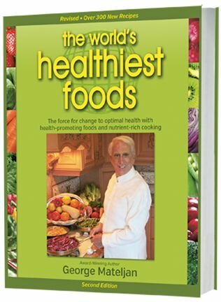

The World's Healthiest Foods are health-promoting foods that can change your life.
The World's Healthiest Foods are health-promoting foods that can change your life.
Try our exciting new WHFoods Meal Plan.
The World's Healthiest Foods are health-promoting foods that can change your life.
Try our exciting new WHFoods Meal Plan.
For serving size for specific foods see the Nutrient Rating Chart.
When you think of dietary minerals, you probably think first of calcium or iron. If you spend a lot of time thinking about nutrition, you may also think about zinc or magnesium. But there are a whole group of trace minerals, which are not generally as well known, that we derive from our diets in very small amounts that are just as critical to healthy lifestyles.
One of these is manganese. In the 1930s, researchers discovered that our bodies require small amounts of dietary manganese each day. Since then, it has been determined that each adult has about 15-20 mg of manganese stored in his or her body. Needless to say, this isn't very much, and in fact some people occasionally eat this much dietary manganese in a single day.
Largely plant-based diets—like those we promote at the World's Healthiest Foods—tend to be rich sources of manganese. Of the World's Healthiest Foods, we currently rate 21 as excellent sources of manganese. We also have 38 very good sources and 26 good sources. Added together, these foods represent 85% of all WHFoods! This large variety gives you many options for obtaining the manganese you need.
We know from animal studies that very low intakes of manganese are associated with poor bone formation. This phenomenon is thought to be due to altered formation of the protein matrix that keeps minerals like calcium in place.
Whether low or marginal manganese intake is a common contributor to bone loss is not known currently. Given that U.S. diets tend to be well above total manganese needs, it appears unlikely that increasing manganese intakes is necessary or helpful in prevention or treatment of osteoporosis.
Manganese is a required co-factor for an enzyme called prolidase, which is in turn necessary to make collagen as a structural component of skin. This role of manganese in collagen production makes this mineral important for everyday skin health. In addition to its collagen production role, manganese also functions as an antioxidant in skins cells and other cell types. It helps protect skin against oxygen-related damage and also against damage from ultraviolet (UV) light. In at least one human study, participants on manganese-deficient diets over a period of weeks developed skin rashes that the researchers associated with too little dietary manganese. After the participants resumed consumption of a manganese-rich diet, these rashes disappeared. There can be an extremely wide variety of reasons for development of skin rashes, and so this study did not mean to suggest that whenever a person has a skin rash, there may very likely be some problem with manganese intake. But this study did point out that manganese deficiency can sometimes play a role in skin problems, including rashes.
Manganese is needed to help multiple enzymes in a process called gluconeogenesis. Gluconeogenesis is the scientific term for conversion of substances like amino acids or organic acids into sugar. Our cells routinely engage in this process, and some of the enzymes involved (like PEPCK, or phosphoenolpyruvate carboxykinase) require manganese to function properly.
Scientists aren't sure about the relationship between diseases involving poor blood sugar control and dietary intake of manganese. In animal studies, manganese-depleted diets can lead to high blood sugars similar to those seen in diabetics. Whether this is true in humans has not been determined.
Either way, we suspect that manganese deficiency is probably not a common contributor to human diabetes. People with diabetes do not consistently have lower manganese intake than people without diabetes. Also, supplementation with large doses of manganese—doses at the top end of what would be seen with plant-based diets—do not appear to improve blood sugar control in diabetes. However, even though manganese deficiency may not directly increase risk of diseases related to blood sugar control (like diabetes), it is still likely to play a very helpful role in everyday blood sugar control.
As noted above, manganese is a co-factor for an enzyme called manganese superoxide dismutase (MnSOD), which is a potent antioxidant associated with protection against free radical damage. Diets low in manganese have been linked to conditions marked by increased free radical damage to cells and tissue,,including skin problems and asthma.
As noted above, the World's Healthiest Foods contain a large number of excellent and very good sources of manganese. These represent a variety of food groups, including whole grains, legumes, vegetables, and fruits.
Unlike most minerals, we see foods on the list that contain close to or the entire Daily Value (DV) for manganese in a single serving. One quarter cup of dried oats, for example, provides 96% of the DV for manganese.
It's worth pointing out that among our 85 WHFoods that rank as excellent, very good, or good sources of manganese, none are animal foods. That's because animal foods are typically low in manganese, and provide 5% or less of the DV.
| World's Healthiest Foods ranked as quality sources of manganese |
||||||
|---|---|---|---|---|---|---|
| Food | Serving Size |
Cals | Amount (mg) |
DRI/DV (%) |
Nutrient Density |
World's Healthiest Foods Rating |
| Cloves | 2 tsp | 11.5 | 2.53 | 110 | 172.0 | excellent |
| Oats | 0.25 cup | 151.7 | 1.92 | 83 | 9.9 | excellent |
| Brown Rice | 1 cup | 216.4 | 1.76 | 77 | 6.4 | excellent |
| Spinach | 1 cup | 41.4 | 1.68 | 73 | 31.8 | excellent |
| Pineapple | 1 cup | 82.5 | 1.53 | 67 | 14.5 | excellent |
| Collard Greens | 1 cup | 62.7 | 0.97 | 42 | 12.1 | excellent |
| Cinnamon | 2 tsp | 12.8 | 0.91 | 40 | 55.5 | excellent |
| Raspberries | 1 cup | 64.0 | 0.82 | 36 | 10.0 | excellent |
| Black Pepper | 2 tsp | 14.6 | 0.74 | 32 | 39.8 | excellent |
| Beet Greens | 1 cup | 38.9 | 0.74 | 32 | 14.9 | excellent |
| Swiss Chard | 1 cup | 35.0 | 0.58 | 25 | 13.0 | excellent |
| Strawberries | 1 cup | 46.1 | 0.56 | 24 | 9.5 | excellent |
| Kale | 1 cup | 36.4 | 0.54 | 23 | 11.6 | excellent |
| Turnip Greens | 1 cup | 28.8 | 0.49 | 21 | 13.3 | excellent |
| Mustard Greens | 1 cup | 36.4 | 0.38 | 17 | 8.2 | excellent |
| Summer Squash | 1 cup | 36.0 | 0.38 | 17 | 8.3 | excellent |
| Turmeric | 2 tsp | 15.6 | 0.34 | 15 | 17.1 | excellent |
| Sea Vegetables | 1 TBS | 10.8 | 0.31 | 13 | 22.4 | excellent |
| Garlic | 6 cloves | 26.8 | 0.30 | 13 | 8.8 | excellent |
| Basil | 0.50 cup | 4.9 | 0.24 | 10 | 38.5 | excellent |
| Bok Choy | 1 cup | 20.4 | 0.24 | 10 | 9.2 | excellent |
| Garbanzo Beans | 1 cup | 269.0 | 1.69 | 73 | 4.9 | very good |
| Pumpkin Seeds | 0.25 cup | 180.3 | 1.47 | 64 | 6.4 | very good |
| Tempeh | 4 oz | 222.3 | 1.46 | 63 | 5.1 | very good |
| Rye | 0.33 cup | 188.5 | 1.44 | 63 | 6.0 | very good |
| Soybeans | 1 cup | 297.6 | 1.42 | 62 | 3.7 | very good |
| Tofu | 4 oz | 164.4 | 1.34 | 58 | 6.4 | very good |
| Barley | 0.33 cup | 217.1 | 1.19 | 52 | 4.3 | very good |
| Quinoa | 0.75 cup | 222.0 | 1.17 | 51 | 4.1 | very good |
| Wheat | 1 cup | 151.1 | 1.11 | 48 | 5.8 | very good |
| Walnuts | 0.25 cup | 196.2 | 1.02 | 44 | 4.1 | very good |
| Sweet Potato | 1 cup | 180.0 | 0.99 | 43 | 4.3 | very good |
| Lima Beans | 1 cup | 216.2 | 0.97 | 42 | 3.5 | very good |
| Sesame Seeds | 0.25 cup | 206.3 | 0.89 | 39 | 3.4 | very good |
| Green Peas | 1 cup | 115.7 | 0.72 | 31 | 4.9 | very good |
| Buckwheat | 1 cup | 154.6 | 0.68 | 30 | 3.4 | very good |
| Beets | 1 cup | 74.8 | 0.55 | 24 | 5.8 | very good |
| Blueberries | 1 cup | 84.4 | 0.50 | 22 | 4.6 | very good |
| Winter Squash | 1 cup | 75.8 | 0.38 | 17 | 3.9 | very good |
| Green Beans | 1 cup | 43.8 | 0.36 | 16 | 6.4 | very good |
| Cranberries | 1 cup | 46.0 | 0.36 | 16 | 6.1 | very good |
| Flaxseeds | 2 TBS | 74.8 | 0.35 | 15 | 3.7 | very good |
| Brussels Sprouts | 1 cup | 56.2 | 0.35 | 15 | 4.9 | very good |
| Cabbage | 1 cup | 43.5 | 0.33 | 14 | 5.9 | very good |
| Broccoli | 1 cup | 54.6 | 0.30 | 13 | 4.3 | very good |
| Asparagus | 1 cup | 39.6 | 0.28 | 12 | 5.5 | very good |
| Leeks | 1 cup | 32.2 | 0.26 | 11 | 6.3 | very good |
| Tomatoes | 1 cup | 32.4 | 0.21 | 9 | 5.1 | very good |
| Fennel | 1 cup | 27.0 | 0.17 | 7 | 4.9 | very good |
| Cauliflower | 1 cup | 28.5 | 0.16 | 7 | 4.4 | very good |
| Romaine Lettuce | 2 cups | 16.0 | 0.15 | 7 | 7.3 | very good |
| Miso | 1 TBS | 34.2 | 0.15 | 7 | 3.4 | very good |
| Cumin | 2 tsp | 15.8 | 0.14 | 6 | 7.0 | very good |
| Lentils | 1 cup | 229.7 | 0.98 | 43 | 3.3 | good |
| Navy Beans | 1 cup | 254.8 | 0.96 | 42 | 2.9 | good |
| Dried Peas | 1 cup | 231.3 | 0.78 | 34 | 2.6 | good |
| Pinto Beans | 1 cup | 244.5 | 0.77 | 33 | 2.5 | good |
| Kidney Beans | 1 cup | 224.8 | 0.76 | 33 | 2.6 | good |
| Black Beans | 1 cup | 227.0 | 0.76 | 33 | 2.6 | good |
| Peanuts | 0.25 cup | 206.9 | 0.71 | 31 | 2.7 | good |
| Sunflower Seeds | 0.25 cup | 204.4 | 0.68 | 30 | 2.6 | good |
| Cashews | 0.25 cup | 221.2 | 0.66 | 29 | 2.3 | good |
| Almonds | 0.25 cup | 132.2 | 0.53 | 23 | 3.1 | good |
| Millet | 1 cup | 207.1 | 0.47 | 20 | 1.8 | good |
| Potatoes | 1 cup | 160.9 | 0.38 | 17 | 1.8 | good |
| Onions | 1 cup | 92.4 | 0.32 | 14 | 2.7 | good |
| Banana | 1 medium | 105.0 | 0.32 | 14 | 2.4 | good |
| Carrots | 1 cup | 50.0 | 0.17 | 7 | 2.7 | good |
| Mushrooms, Shiitake | 0.50 cup | 40.6 | 0.15 | 7 | 2.9 | good |
| Eggplant | 1 cup | 34.6 | 0.11 | 5 | 2.5 | good |
| Mushrooms, Crimini | 1 cup | 15.8 | 0.10 | 4 | 4.9 | good |
| Celery | 1 cup | 16.2 | 0.10 | 4 | 4.8 | good |
| Bell Peppers | 1 cup | 28.5 | 0.10 | 4 | 2.7 | good |
| Oregano | 2 tsp | 5.3 | 0.10 | 4 | 14.8 | good |
| Mustard Seeds | 2 tsp | 20.3 | 0.10 | 4 | 3.9 | good |
| Chili Peppers | 2 tsp | 15.2 | 0.09 | 4 | 4.6 | good |
| Soy Sauce | 1 TBS | 10.8 | 0.09 | 4 | 6.5 | good |
| Peppermint | 2 TBS | 5.3 | 0.09 | 4 | 13.2 | good |
| Thyme | 2 TBS | 4.8 | 0.08 | 3 | 12.9 | good |
| Cucumber | 1 cup | 15.6 | 0.08 | 3 | 4.0 | good |
| Dill | 0.50 cup | 1.9 | 0.06 | 3 | 24.6 | good |
| World's Healthiest Foods Rating |
Rule |
|---|---|
| excellent | DRI/DV>=75% OR Density>=7.6 AND DRI/DV>=10% |
| very good | DRI/DV>=50% OR Density>=3.4 AND DRI/DV>=5% |
| good | DRI/DV>=25% OR Density>=1.5 AND DRI/DV>=2.5% |
Manganese content of foods tends to be stable throughout their shelf life, provided that they are stored properly for the recommended period of time. If you would like to learn more about how to best keep foods, each of our World's Healthiest Food profiles contains a section on How to Select and Store for best quality.
In legumes, cooking does not appear to lead to much or any loss of manganese. With vegetables, you may expect a little more loss of manganese with cooking. Still, you'll be able to minimize this loss by reducing cooking time and contact with cooking water. For instance, the manganese loss after cooking spinach with a brief boil time was less than 10%. Our food profiles always provide you with precise recommendations for cooking times and cooking methods that will help you preserve nutrients, including manganese.
Typical non-vegetarian diets contain about 2 to 7 mg of manganese daily. Vegetarians tend to have more manganese and can approach 10 or more mg daily. As reflected in the Food Source section,both dietary patterns should typically be able to meet or surpass the 2 mg per day Daily Value (DV) recommendation.
lt would be almost impossible to eat a diet that was based on the World's Healthiest Foods and not get plenty of manganese, especially if that diet contained plenty of our World's Healthiest plant foods. Nearly all of our listed foods contain at least some of this mineral, and 85 of our plant foods rate as good, very good, or excellent sources of manganese.
Since we are not aware of any studies showing widespread manganese deficiency among any population groups within the U.S., and because dietary deficiency of manganese appears to be the foremost cause of manganese deficiency in all countries that have been studied by researchers, we have not been able to identify circumstances outside of your dietary intake that might put you a greater risk for manganese deficiency. Of course, like all nutrient deficiencies, manganese deficiency can be caused by unusual medical problems. For example, we've seen studies showing a connection between bowel surgeries and manganese deficiency. However, when people have unusual medical problems, they often develop multiple nutrient deficiencies, and these kinds of problems require the involvement of the individual's healthcare team.
Animal studies suggest that iron deficiency can increase the absorption of dietary manganese. The converse—that high levels of iron can interfere with absorption of manganese—also appears to be true. It's not clear, however, exactly what these animal studies mean for humans, except to suggest that we typically want to avoid extremely high or extremely low intake of either mineral. We have seen some human studies on manganese in children who are iron deficient, and in some of these studies, these children have shown elevated levels of manganese in their blood that may be of possible concern. These studies are further evidence of a special relationship between manganese and iron. In a practical sense, the bottom line here for us is simple: when talking to your healthcare provider about possible concerns with either mineral, it makes sense to ask questions about the other mineral as well. (Please see our profile for iron for more information on this nutrient.)
Calcium and magnesium also can compete with manganese for absorption. Although this has not been reported as a cause of manganese deficiency in humans, it is possible that high calcium and/or magnesium diets may slightly impair manganese nutrition. However, from a practical standpoint, many diets that are high in calcium and/or magnesium—especially if these minerals are primarily obtained from plant foods—are simultaneously high in manganese, making the risk of manganese deficiency relatively low.
In 2001, The National Academy of Sciences (NAS) established a Tolerable Upper Intake Level (UL) of 11 mg for total daily manganese intake for adults 19 and older. This level was based on the uppermost amount of manganese found in the diet of healthy people.. While we support the establishment of this UL recommendation from the NAS, we would also point out that it was not based on evidence about unwanted health consequences if this dietary level was exceeded. In other words, the NAS did not have evidence about health problems that might occur if dietary intake of manganese routinely exceeded this 11 mg level. The NAS only had evidence that no such problems had been observed in U.S. adults whose average daily manganese intake was as high as 11 mg. So the NAS adopted this 11 mg UL level to err on the conservative side in its public health recommendation.
Dietary manganese levels can be surprisingly high in some populations. In fact, unlike most required dietary minerals, it is not especially difficult to exceed the UL of 11 mg with very reasonable dietary intake. For example, if you eat one serving from each of our Top 10 manganese-rich foods in one day, you will exceed the manganese UL. As described above, we are not aware of any reason to deliberately avoid manganese-rich foods, provided that you consume an overall balanced diet with optimal intake of other minerals and do not have health problems that might compromise your body's handling of these minerals,
In 2001, the National Academy of Sciences published Dietary Reference Intakes (DRIs) for manganese. These DRIs were Adequate Intake levels, or AIs. Here are those recommendations as established by the NAS:
These 2001 DRI guidelines also established a Tolerable Upper Intake Level (UL) of 11 mg for total daily manganese intake. For more information about this UL recommendation, please see our Risk of Dietary Toxicity section.
The Daily Value (DV) for manganese is 2 mg per 2000 calories. This is the recommendation that is used in the food charts below, and it is also the standard that we adopt as our WHFoods standard.


Everything you want to know about healthy eating and cooking from our new book.

Order this Incredible 2nd Edition at the same low price of $39.95 and also get 2 FREE gifts valued at $51.95. Read more